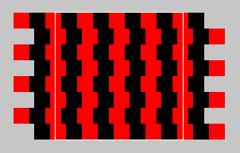

Solution for Programmming Exercise 3.7
This page contains a sample solution to one of the exercises from Introduction to Programming Using Java.
Exercise 3.7:
Write an animation applet that shows a checkerboard pattern in which the even numbered rows slide to the left while the odd numbered rows slide to the right. You can assume that the applet is 160 by 160 pixels. Each row should be offset from its usual position by the amount getFrameNumber() % 40. Hints: Anything you draw outside the boundaries of the applet will be invisible, so you can draw more than 8 squares in a row. You can use negative values of x in g.fillRect(x,y,w,h). Here is a working solution to this exercise:
Your applet will extend the non-standard class, SimpleAnimationApplet2, which was introduced in Section 3.8. The compiled class files, SimpleAnimationApplet2.class and SimpleAnimationApplet2$1.class, must be in the same directory as your Web-page source file along with the compiled class file for your own class. These files are produced when you compile SimpleAnimationApplet2.java. Assuming that the name of your class is SlidingCheckerboard, then the source file for the Web page should contain the lines:
<applet code="SlidingCheckerboard.class" width=160 height=160> </applet>
Obviously, this exercise builds on the previous exercise, so you should read and understand the solution to the previous exercise first.
The squares on the checkerboard are 20 pixels on each side. Looking from left to right, the pattern of red and black squares repeats itself after two squares, that is, after 40 pixels. If a row moves one pixel per frame, then after 40 frames, the pattern will look the same as it did in the first frame. So there are only 40 distinct frames in the animation. The appearance of the frame is determined by how far each row is offset from its original position. The offsets are given by 0, 1, 2, ..., 39. This sequence repeats itself over and over. The proper offset for a given frame can be computed as getFrameNumber() % 40, as noted in the statement of the exercise.
If we just slide a row of eight squares, it will leave a blank area on the right as the row slides left, or a blank area on the left as the row slides right. It's useful to think of the checkerboard as being extended by two extra squares on each side. Only the middle eight squares will be visible. Instead of 8 squares extending from x = 0 to x = 160, we have 12 squares extending from x = -40 to x = 200. Even when the rows are offset by up to two squares, the whole visible area of the applet will be filled with squares. Here, for example, is what it looks like for an offset of 13 pixels:

A white rectangle is drawn around the visible area of the applet. The parts of the rows outside this rectangle are shown in this picture, and my program will issue commands for drawing them, but they are not visible when the applet is run.
With all this figured out, it's not terribly difficult to adapt the solution from the previous exercise. If we were just drawing a static, 12-column checkerboard where the first column starts at x = -40 instead of x = 0, the code would be almost identical to the code from that exercise:
for ( row = 0; row < 8; row++ ) {
for ( col = 0; col < 12; col++ ) {
x = -40 + 20*col;
y = 20*row;
if ( (row % 2) == (col % 2) )
g.setColor(Color.red);
else
g.setColor(Color.black);
g.fillRect(x,y,20,20);
}
}
The only problem is that the starting point of the first square is not -40. It is offset from -40 by an amount that depends on the frame number. It also depends on whether the row number is odd or even, since odd rows are offset to the left and even rows are offset to the right. The amount of offset is computed as offset = frameNumber() % 40. This offset has to be added to -40 to give the starting point of the row. Let leftEdge be a variable that will store the starting point of the row. If the row number is even, leftEdge is computed as -40 - offset. If the row number is even, leftEdge is -40 + offset. Adding these computations to the above code gives a complete algorithm for drawing one frame in the animation:
offset = frameNumber() % 40; // Amount by which each row is offset.
for ( row = 0; row < 8; row++ ) {
if ( row % 2 == 0) // if row number is even
leftEdge = -40 - offset;
else
leftEdge = -40 + offset;
for ( col = 0; col < 12; col++ ) {
x = leftEdge + 20*col;
y = 20*row;
if ( (row % 2) == (col % 2) )
g.setColor(Color.red);
else
g.setColor(Color.black);
g.fillRect(x,y,20,20);
}
}
Once the variable declarations are added, this becomes the body of the drawFrame() subroutine of the applet. The applet must follow the general framework for animations based on the SimpleAnimationApplet2.java, as given in Section 3.8.
import java.awt.*;
public class SlidingCheckerboard extends SimpleAnimationApplet2 {
/*
Applet shows a checkerboard pattern in which the even numbered
rows slide to the left and the odd numbered rows slide to the
right. It is ASSUMED that the applet is 160x160 pixels, since
the individual squares in the board are 20 pixels on a side.
*/
public void drawFrame(Graphics g) {
// Draw one frame in the animation.
int offset; // Amount by which the rows are offset from their usual
// position. Even numbered rows are offset by this
// amount to the left, odd numbered rows to the right.
int row, col; // Row and column numbers, used as loop control variables.
int x,y; // Top-left corner of a square.
offset = getFrameNumber() % 40; // horizontal offset is in the range 0 to 39.
for ( row = 0; row < 8; row++ ) {
/* Draw one row. */
int leftEdge; // Position of left edge of this row, after it is offset from its
// usual position. This is given by -40-offset if row is even
// and by -40+offset if row is odd.
if (row % 2 == 0)
leftEdge = -40 - offset;
else
leftEdge = -40 + offset;
/* Draw 12 squares per row, to make sure that the part of the row that
is visible in the applet is completely filled with squares. When offset
is zero, the row extends two squares to the left and two squares to the
right of the applet, starting at x = -40. When offset > 0, the rows
are offset by that amount to the left or right.
*/
for ( col = 0; col < 12; col++) {
x = leftEdge + col * 20;
y = row * 20;
if ( (row % 2) == (col % 2) ) // Make colors alternate in a checkerboard fashion.
g.setColor(Color.red);
else
g.setColor(Color.black);
g.fillRect(x, y, 20, 20);
}
} // end for row
} // end drawFrame()
} // end class SlidingCheckerboard